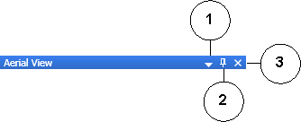

Views
Views are mini-windows with specific functionality that allow you to display, create, test, or edit elements, graphics, and Symbols. The table below provides a description of each view in the Graphics Editor.
View | Description |
Aerial View | View the entire drawing area and active graphic at all times, while giving you the ability to zoom in on a specific area of the graphic. |
Brush Editor | Modify your drawing elements with options such as colors, gradients, light angles, and other special effects to achieve a truly custom look. |
Depths | Create, delete, rename, and change the properties of a depth, view a list of depths and layers and move them up or down the list to order them, associate depths to layers and display the size and Symbol scale factor. |
Element Tree | Display, add, and delete layers associated with the active graphic or Symbol. All the drawing elements associated with the layers are also displayed in the Element Tree view. Elements within a layer can be ordered using the positioning arrows at the bottom of the view. Within the Element Tree you can also decide which layers, depths, or elements to display in Runtime or Design mode. |
Evaluation Editor | Set and edit element properties of the active graphic or Symbol. |
Find and Replace | Customize a search and replace (optional) for specific text, strings, values, and properties in all open graphics or all the graphics in your project. |
Properties | View, set, and edit the properties of the selected elements on the canvas. |
Library Browser | Preview, sort, select, and edit existing Symbols and their names. You can also resize a Symbol within the Library Browser. |
Comparison Browser | Open another instance of the Library Browser to compare Symbols and graphic Templates from other libraries. |
Value Simulator | Select, view, and adjust the settings for simulating property values to test how configured graphic settings will be applied in Runtime mode. |
Status Bar |
|
View Menu Bar
The following menu bar displays at the top of all views.

Views Menu Bar | ||
| Name | Description |
1 | Window Position Menu | Click the icon to choose from the following options from the Windows Position menu:
|
2 | Auto-Hide | Hide the entire dock panel from your workspace. Click the Views text button to slide the Views panel back into view. This option is only available when the panel is docked. |
3 | Close | Close the view and remove it from the docking panel. |
Related Topics
For background information, see Views and Dock Panel.
For related procedures, see Arranging Views and Dock Panel Placement.